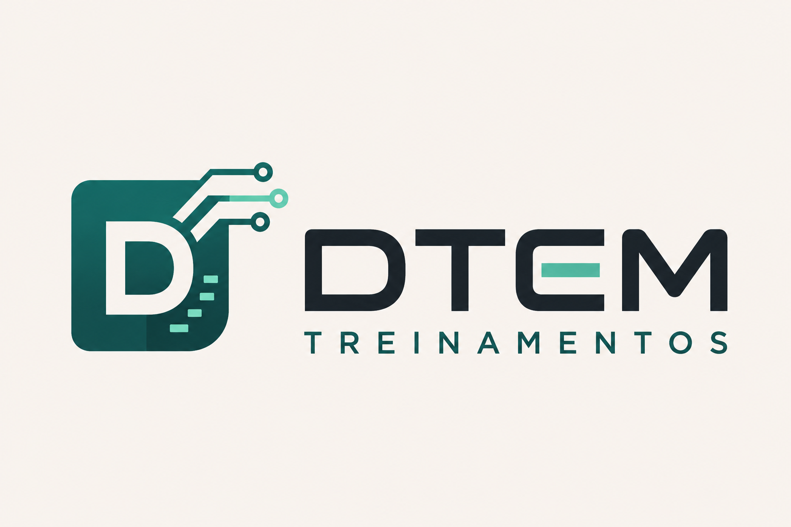

Base para entender tecnologia
Você aprende os conceitos essenciais: front-end, back-end, APIs, banco de dados, desenvolvimento de software e pensamento computacional.

Formação inicial para carreira em tecnologia
Aprenda como o mercado tech funciona na prática e construa uma base real para atuar em QA, Produto, Gestão de Projetos, Desenvolvimento e times ágeis.
Mercado, áreas de atuação, APIs e bancos de dados.
Para quem é
Você aprende os conceitos essenciais: front-end, back-end, APIs, banco de dados, desenvolvimento de software e pensamento computacional.
O curso mostra como times de tecnologia trabalham, como áreas se conectam e como projetos digitais saem da ideia até a entrega.
Ao longo da formação, você cria artefatos que podem ser usados no GitHub, LinkedIn, entrevistas e processos seletivos.
Como funciona a formação
A proposta da DTEM combina encontros semanais com materiais de apoio para que você acompanhe os conteúdos desde os primeiros conceitos até as atividades práticas.
Encontros ao vivo, uma vez por semana, para explorar os temas e tirar dúvidas durante a aula.
As aulas ficam disponíveis na Plataforma do Aluno, oferecendo um espaço para acompanhar e rever os conteúdos.
Tenha acesso aos e-books dos módulos para acompanhar as explicações, consultar exemplos e revisar os assuntos.
Resultado esperado
Conteúdo
A jornada foi pensada para levar o aluno do zero até uma simulação prática de ambiente corporativo.
Mercado de TI, áreas de atuação, APIs, banco de dados e pensamento computacional.
Algoritmos, variáveis, condições, laços, funções e resolução de problemas reais.
Sistemas, Git, GitHub, versionamento, noções de código e leitura de código.
QA, testes funcionais, regressão, testes exploratórios, bugs, Jira e Azure DevOps.
Produto digital, requisitos, User Stories, critérios de aceite, backlog e priorização.
Projetos, Scrum, Kanban, daily, planning, review e papéis dentro do time.
Levantamento, desenvolvimento, testes, deploy, integração entre áreas e Shift Left.
Simulação de empresa com QA, PO, sprint, bugs, casos de teste e apresentação final.
Portfólio
A formação conduz o aluno na criação de entregas práticas usadas no dia a dia de empresas de tecnologia. A ideia é que cada entrega conte uma história profissional em entrevistas.
Bônus de carreira
Condições especiais
Uma trilha com oito módulos, aulas ao vivo semanais, acesso às aulas pela Plataforma do Aluno e e-books de apoio para estudar durante a formação.
Próxima turma
Aulas ao vivo uma vez por semana, acesso às aulas pela Plataforma do Aluno e e-books de apoio. Escolha sua condição: R$ 1.190,00 à vista ou 10x de R$ 140,00 (total de R$ 1.400,00).
Garantir minha vaga